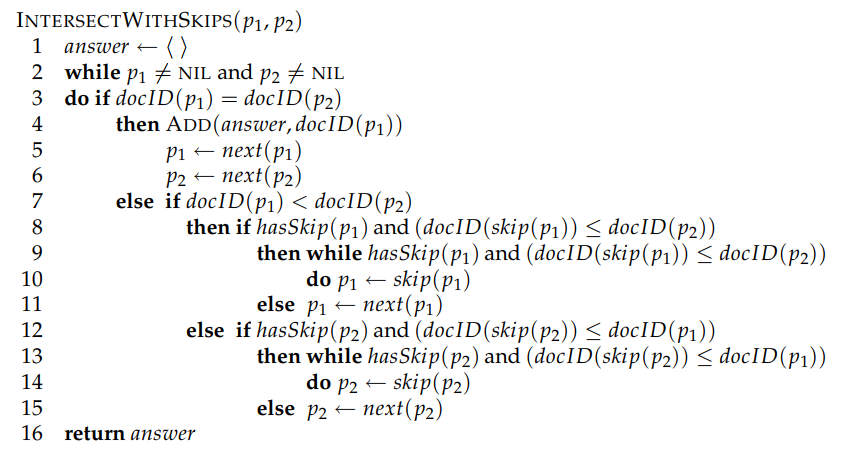
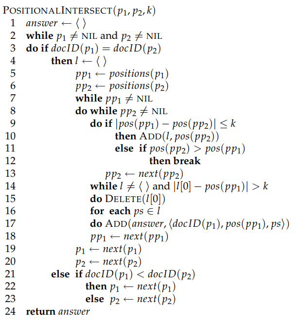
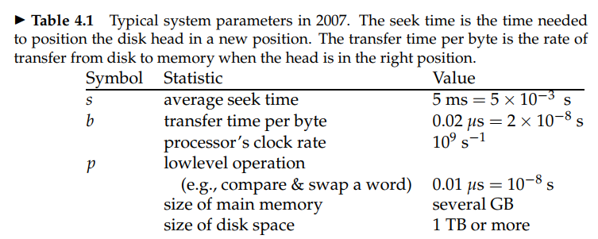
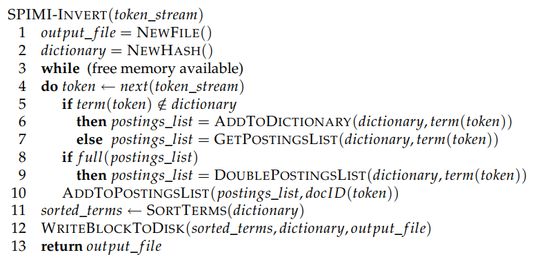
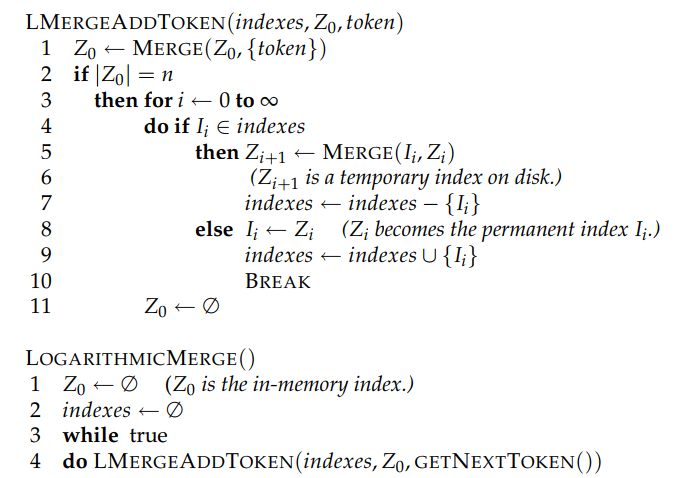

布尔检索
信息检索基本概念
信息检索定义： 从大规模非结构化数据（通常是文本）的集合中找出满足用户信息需求的资料的过程。
数据类型分类
- 结构化数据： 按照预定义的模型结构化或以预定义的方式组织的数据。例如，关系数据库。
- 非结构化数据：既没有按照预定义的数据模型进行结构化，也没有按照预定义的方式组织的数据。例如：文档、书籍。
- 半结构化数据：介于完全结构化数据和完全无结构化数据之间的数据，例如：HTML文件，JSON文件。
检索规模
- Web搜索 (web search)：大规模级别
- 个人信息检索 (personal information search)：小规模级别
- 企业、机构和特定领域 (domain-specific search)：中等规模
布尔检索模型
关联矩阵(incidence matrix)：根据每个词项是否在文档中出现得到一个布尔值构成的词项-文档关联矩阵。

功能：布尔检索模型接受布尔表达式查询，即通过AND/OR/NOT等逻辑运算符将词项连接的查询。
缺陷：非常占用存储容量，对于稍大一点的语料库，计算机无法存下。且矩阵具有高度稀疏性，非常浪费存储空间。
评估指标
正确率：返回结果中真正和信息需求相关的文档所占的百分比。
召回率：所有和信息需求相关的文档所占百分比。
倒排索引
由于关联矩阵大部分元素为0，我们很自然想到只记录矩阵中为1的元素会更好。
每个词项都有一个记录出现该词项的所有文档的列表，该表中的每个元素记录的是词项在某文档中的一次出现信息，每个词项对应的整个表称为倒排表。

倒排表存储方式
- 单链表：便于文档插入和更新
- 变长数组：节省指针空间；连续内存存储可以充分利用缓存技术
合并算法
对于两个词项的合并，令两个指针指向两个词项倒排表的头部，因为倒排表中ID是有序的，于是每次让指向ID小指针后移，如果两个指针指向ID相同时，则将ID输出到结果表中，因为每个指针只用扫一遍，如果两个倒排记录表大小分别为$x$和$y$，则时间复杂度为$O(x+y)$。

如果两个倒排记录表长度差距很大时，可以将短的倒排表中每个元素在长的倒排表中中二分查询，时间复杂度为$O(x\log y)$。
词项词典及倒排记录表
字符序列的生成
文档处理的第一步一般是，将字节序列转换成线性的字符序列：
- 正确判断出文档的编码方式（机器学习或者启发式方法或者手工选择）
- 确定编码方式后，就可以将字节序列转换成字符序列，在此过程中还应该保存编码信息，因为该信息有时能帮助确定文档的语言种类。
文档单位的选择
存在索引粒度(indexing granularity)的问题：例如，是选择将每本书作为索引单位还是将每章或每段作为索引单位。
- 索引粒度太小$\rightarrow$正确率高，召回率低
- 索引粒度太大$\rightarrow$正确率低，召回率高
词条化
词条化是指将给定字符序列拆分成一系列子序列的过程。其中每个子序列称为一个**词条 **(token)。

**词条类 **(type)：相同词条构成的集合。
例如：to sleep perchance to dream
上面的句子有5个词条，4个词条类（两个to归为一类）
去除停用词
停用词(stop word)：一些常见词在文档和用户需求进行匹配时价值并不太大，需要彻底从词汇表中去除。

趋势：对于现代IR系统来说，不去除停用词所增加的开销没有那么大，趋势是从大停用表到小停用表，最后到不用停用词。
词项归一化
词项归一化(token normalization)：将看起来不完全一致的多个词条归纳成一个等价类以便它们之间进行匹配的过程。
- 最常规的做法是隐式的建立等价类，每类可以用其中的某个元素来命名。比如：anti-discriminatory和discriminatory。
去除连字符的好处：
一方面，等价类的建立是隐式的，而不需要事先计算出等价类的全部元素，在映射规则下输出相同结果的词项一起构成等价类集合
另一方面，仅仅构建“去除字符”这种映射规则也比较容易。当然，由于等价类是隐式存在的，所以构建“增加字符”并不容易。
- 另一种建立等价类的方法是维持多个非归一化词条之间的关联关系。该方法可以扩展成手工建立同义词词表。
等价类处理会遇到的问题：
- 重音及变音符号问题
- 大小写转换问题
- 英语中独特的归一化做法。如，英式英语colour和美式英语color
- 其他语言问题
词干还原和词形归并
**词干还原 (stemming)**：通常只的是一个很粗略的去除单词两段词缀的启发式过程，并且希望大部分时间他都能够达到这个正确目的，这个过程也常常包括去除派生词缀。
**词形归并 (lemmatization)：利用词汇表和词形分析来去除屈折词缀，从而返回词的原形或词典中的词的过程，返回结果称为词元 (lemma)**。
进行词干还原过程，会降低正确率，提升召回率，因为会扩充一部分词。
基于跳表的倒排记录表快速合并算法
普通的倒排记录表快速合并算法需要时间复杂度：$O(x+y)$。但很多时候，我们不需要遍历每个值，我们可以一些位置上设置跳表指针，当一个指针对应的跳表指针比另一指针的ID还要小的情况，我们可以直接跳过一些位置。
但是跳表只用于AND操作，不能用于OR操作。
在什么位置上放置跳表？跳表越多，意味着跳跃步长越短；跳表越少，意味着跳跃机会越少。根据分块思想，$\sqrt P$处均匀放置跳指针是不错的选择，$P$是倒排记录表的长度。
含位置信息的倒排记录表及短语查询
很多复杂的或技术性的概念、机构名和产品名等都是由多个词语组成的复合词或短语中多个词看成一个整体，为支持短语的查询，只列出词项所在文档列表的倒排表不能满足要求。
1. 二元词索引：
**二元接续词对 (biword)**：将每个接续词对看成一个短语，将每个查询分成多个短查询处理。
查询：Stanford university palo alto
布尔查询： Stanford university AND university palo AND palo alto
这种查询并不能保证位置一定连续，可能偶尔存在错误，但实际中错误可能性很小。
2. 位置信息索引
穷举所有二元词会大大增加词汇表的大小，实际常用的方法是位置信息索引 (positional index).

有时我们需要计算出词之间的偏移距离，可以采用K词近邻搜索：
上述算法中因为$p1,p2$指针只要扫一遍，所以查找的时间复杂度为线性复杂度$O(N)$。但是，输出结果可能很有很多，最坏情况下输出复杂度为$O(nk)$。但是考虑实际情况，很少有同一个词在一些相邻位置反复出现，所以最坏情况很难达到。
3. 混合索引机制
对某些查询只用短语索引或只使用二元词索引，而对其他短语查询则采用位置索引。
- 短语索引所收录的那些较好的查询可以根据用户最近的访问行为日志统计得到，也就是说，它们往往是那些高频常见的查询。
- 处理开销最大的短语查询往往是这样一些短语，他们中的每个词都非常常见，但是组合起来却相对很少见。
- 虽然这些短语出现的不够频繁，但是通过短语索引后的处理效率会有更大的提高，所以也常常将这类短语加入短语索引中。
词典及容错式检查
词典搜索的数据结构
哈希表方式和二叉搜索树的形式。
单通配符查询
通配符查询适用于如下场景：
(1)用户对查询的拼写不太确定。
(2)用户知道某个查询词项可能有不同的拼写版本。
(3)用户查找某个查询词项的所有变形，这些变形可能还做了词干还原，但是用户并不知道搜索引擎是否进行了词干还原。
(4)用户不确定一个外来词或者短语的正确拼写形式。
尾通配符查询：B树
首通配符查询：反向B树
一般单通配符查询：B树与反向B树的交集
轮排索引
引入字符$表示词项结束。
例如，hello$\leftarrow$hello$、ello$h、llo$he、lo$hel…
**轮排词汇表 (permuterm index)**：词项旋转的集合。
查询示例 1（m*n）：关键是将查询旋转直到*号出现在末尾，即 n$m*。
查询示例 2 （fi*mo*er）：对应查询 er$fi*，再过滤不含mo的词项。
k-gram索引
一个k-gram索引代表由k个字符组成序列。
例如：castal的3-gram包含$ca、cas、cat、ast、tle、le$

查询示例 1 (re*ve)：$re AND ve$
查询示例 2 (red*)：$re AND red ，可能会对应到retired，还需要后过滤的过程。
后过滤：利用原始查询对布尔查询的结果逐一过了。
拼写改正
改正原则
对于大多数拼写校正（spelling correction）算法而言，存在以下两个基本原则：
(1)对于一个拼写错误的查询，在其可能的正确拼写中，选择距离“最近”的一个。
(2)当两个正确拼写查询邻近度相等（或相近）时，选择更常见的那个。
- “更常见”可以通过统计各词项在文档集中出现的次数来获得。
- 很多搜索引擎使用了另一种“更常见”的概念：使用所有其他用户输入的查询中出现最频繁的拼写形式作为最后的选择。
改正方法
两种拼写校正的方法：
词项独立（isolated-term）：不管查询中包含多少个查询词项，每次只对单个查询词项进行校正，也就是说在校正时词项是相互独立的。
- 编辑距离方法
- k-gram重合度方法
上下文敏感（context-sensitive）：结合查询全文进行改正
编辑距离
两个字符串的编辑距离为通过以下操作将s1变为s2的最少操作数：
- 将一个字符插入字符串
- 从字符串中删除一个字符
- 将字符串中的一个字符替换成另外一个字符
基于这些操作的编辑距离有时也称为Levenshtein距离（Levenshtein distance）。
非常简单的动态规划方程：$dp[i][j] = min\{dp[i-1][j-1] + (s_1[i]==s_2[j]), s[i-1][j], s[i][j - 1]\}$
k-gram索引

上表对应查询bord时扫描的2-gram索引表。
定义 Jaccard系数：$|A\and B|/|A\or B|$。
$A$表示查询q的k-gram集合，$B$表示词汇表词项中的k-gram集合。
例如，q=bord扫描到第三排第三个boardroom时，分子命中了{bo,rd}两个元素，分母就等于A的3个元素加上B的8个元素再减去重复命中的2个元素，得$\frac{2}{8+3-2}$。
设定一个阈值，如果计算得到的Jaccard系数超过阈值，则表示需要更正；否则继续扫描。
上下文敏感的拼写改正
例如 flew form Beijing，三个词都是对的，但是结合上下文建议的拼写应该是flew from Beijing。这是词项独立的检索就无能为力了。
一种简单的实现方法是：即使每个词都是对的，也为每个单词找到可能的拼写正确词，然后尝试对词语中每个词进行替换，对每个替换的短语进行查找，根据搜索引擎查到的文档数目情况，确定最后改正结果。
索引构建
硬件参数
特点：
- 访问内存数据比访问磁盘数据快得多。$5\times 10^{-9}s>2\times 10^{-8}s$
- 进行磁盘读写时，磁头移到数据所在磁道需要一定时间，称为寻道时间。$5ms$
- 操作系统往往以数据块为单位进行读写。
基于块的排序索引方法
由于内存不足，必须使用基于磁盘的外部排序算法（external sorting algorithm）。
为了达到可以接受的速度，对该算法的核心要求是：在排序时尽量减少磁盘随机寻道的次数。
BSBI（blocked sort-based indexing algorithm，基于块的排序索引算法）是一种解决办法：
将文档集分割成几个大小相等的部分
将每个部分的词项ID-文档ID对顺序
将中间产生的临时排序结果存放到磁盘中
将所有的中间文件合并成最终的索引
上述算法因为提前映射好了每个词项与ID的对应关系，所以在每一块处理好后，为了方便后续块与块之间合并，需要对每一个块进行排序，时间复杂度：$O(T\log T)$。
内存式单遍扫描索引构建方法
BSSI算法需要将词项对应映射到ID的数据结构，对于大规模数据来说，该数据结构会很大。
SPIMI（single-pass in-memory indexing，内存式单遍扫描索引算法）省略了将文档转换成词项-文档ID的过程。取而代之的是，每次逐一扫描每个词，通过哈希表判断每个词是否第一次出现，如果不是第一次，则直接返回其倒排记录表；否则，加入词典，并建立新的倒排记录表。
优点：
- 由于不需要排序操作，因此处理的速度更快，时间复杂度：$O(T)$
- 由于保留了倒排记录表对词项的归属关系，因此能够节省内存，词项的ID也不需要保存。
分布式索引构建方法
Web搜索引擎通常使用分布式索引构建（distributed indexing）算法来构建索引，其索引结果也是分布式的，它往往按照词项或文档进行分割后分布在多台计算机上。
分布式索引构建方法是MapReduce的一个应用。MapReduce是一个通用的分布式计算架构，它面向大规模计算机集群而设计。集群中的主控节点（master node）负责处理任务在工作节点上的分配和重分配。
MapReduce中的map阶段和reduce阶段将计算任务划分成子任务块，一遍每个工作节点在短时间内快速处理。

动态索引构建方法
大部分文档集会随文档增加、删除或更新而不断变化，这也意味着要将新的词项加入词典，并对已有词项的倒排记录表进行更新。
方法一：最简单的方法，周期性对文档集从头开始重构。
方法二：保持两个索引，一个小的用于存储新文档信息的辅助索引（auxiliary index），保存在内存中，另一个是大的主索引。每当辅助索引变得很大，内存无法存下时，就将它合并到主索引中。
方法二中，合并到主索引时，若每个词项的倒排表能单独存成一个文件，则可以直接进行合并，然而由于绝大多数文件系统不能对大量文件高效处理，很多时候索引存成一个大文件。
假设辅助索引大小为$n$，$T$是所有倒排记录数目，每次辅助索引满了就要合并，需要合并$O(\frac{T}{n})$，每次合并需要扫描所有文件，时间复杂度$O(\frac{T^2}{n})$。
为了加快上述过程，可以考虑对数合并，引入$O(\log_2{\frac{T}{n}})$个索引，每个索引大小为$2^0n,2^1n,…$
由于每个倒排记录表在每层中只处理一次，时间复杂度为$O(T\log_2 {\frac{T}{n}})$。然而，因为索引个数变多，每次查询时也要合并$O(\log_2 n)$个索引的结果，查询速度会下降。